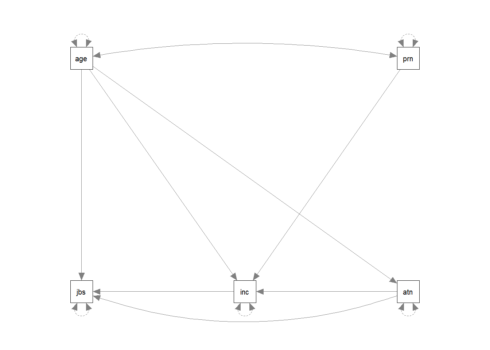

Path Analysis
Preliminaries
- Create a new RMarkdown document or R script (whichever you like) for this week.
Relevant packages
- lavaan
- semPlot or tidySEM
Motivation
By now, we are getting more comfortable with the regression world, and we can see how it is extended to lots of different types of outcome and data structures. So far in DAPR3 it’s been all about the multiple levels. This has brought so many more potential study designs that we can now consider modelling - pretty much any study where we are interested in explaining some outcome variable, and where we have sampled clusters of observations (or clusters of clusters of clusters of … etc.).
But we are still restricted to thinking, similar to how we thought in DAPR2, about one single outcome variable. In fact, if we think about the structure of the fixed effects part of a model (i.e., the bit we’re specifically interested in), then we’re still limited to thinking of the world in terms of “this is my outcome variable, everything else predicts it”.
Regression as a path diagram
- Imagine writing the names of all your variables on a whiteboard
- Specify which one is your dependent (or “outcome” or “response”) variable.
- Sit back and relax, you’re done!
In terms of a theoretical model of the world, there’s not really much to it. We have few choices in the model we construct beyond specifying which is our outcome variable.
We can visualise our multiple regression model like this:
Of course, there are a few other things that are included (an intercept term, the residual error, and the fact that our predictors can be correlated with one another), but the idea remains pretty much the same:

A model reflects a theory
What if I my theoretical model of the world doesn’t fit this structure?
Let’s suppose I have 5 variables: Age, Parental Income, Income, Autonomy, and Job Satisfaction. I draw them up on my whiteboard:

My theoretical understanding of how these things fit together leads me to link my variables to end up with something like that in Figure 2.

In this diagram, a persons income is influenced by their age, their parental income, and their level of autonomy, and in turn their income predicts their job satisfaction. Job satisfaction is also predicted by a persons age directly, and by their level of autonomy, which is also predicted by age. It’s complicated to look at, but in isolation each bit of this makes theoretical sense.
Take each arrow in turn and think about what it represents:

If we think about trying to fit this “model” with the tools that we have, then we might end up wanting to fit three separate regression models, which between them specify all the different arrows in the diagram:
\[ \begin{align} \textrm{Job Satisfaction} & = \beta_0 + \beta_1(\textrm{Age}) + \beta_2(\textrm{Autonomy}) + \beta_3(\textrm{Income}) + \varepsilon \\ \textrm{Income} & = \beta_0 + \beta_1(\textrm{Age}) + \beta_2(\textrm{Autonomy}) + \beta_2(\textrm{Parental Income}) + \varepsilon \\ \textrm{Autonomy} & = \beta_0 + \beta_1(\textrm{Age}) + \varepsilon \\ \end{align} \]
This is all well and good, but what if I want to talk about how well my entire model (Figure 2) fits the data we observed?
Introducing Path Analysis
Mountains cannot be surmounted except by winding paths
The starting point for Path Analysis is to think about our theories in terms of the connections between variables drawn on a whiteboard. By representing a theory as paths to and from different variables, we open up a whole new way of ‘modelling’ the world around us.
There are a few conventions to help us understand this sort of diagrammatical way of thinking. By using combinations of rectangles, ovals, single- and double-headed arrows, we can draw all sorts of model structures. In Path Diagrams, we use specific shapes and arrows to represent different things in our model:
Shapes and Arrows in Path Diagrams
- Observed variables are represented by squares or rectangles. These are the named variables of interest which exist in our dataset - i.e. the ones which we have measured directly.
- Variances/Covariances are represented by double-headed arrows. In many diagrams these are curved.
- Regressions are shown by single headed arrows (e.g., an arrow from \(x\) to \(y\) for the path \(y~x\)).
- Latent variables are represented by ovals, and we will return to these in a few weeks time!

Terminology refresher
- Exogenous variables are a bit like what we have been describing with words like “independent variable” or “predictor”. In a path diagram, they have no paths coming from other variables in the system, but have paths going to other variables.
- Endogenous variables are more like the “outcome”/“dependent”/“response” variables we are used to. They have some path coming from another variable in the system (and may also - but not necessarily - have paths going out from them).
How does it work (in brief)?
The logic behind path analysis is to estimate a system of equations that can repdroduce the covariance structure that we see in the data.
Suppose we think that
we collect data on these variables and observed the following correlation matrix:
we can evaluate how well our theoretical model (the system of equations) can reproduce the correlation matrix
this allows us to then compare this theoretical model with one which does NOT have a path from … to ..


Doing Path Analysis
Introducing lavaan
For the remaining weeks of the course, we’re going to rely heavily on the lavaan (Latent Variable Analysis) package. This is the main package in R for fitting path diagrams (as well as more cool models like factor analysis sructures and structural equation mdoels). There is a huge scope of what this package can do.
The first thing to get to grips with is the various new operators which it allows us to use.
Our old multiple regression formula in R was specified as y ~ x1 + x2 + x3 + ....
In lavaan, we continue to fit regressions using the ~ symbol, but we can also specify the construction of latent variables using =~ and residual variances & covariances using ~~.
| formula type | operator | mnemonic |
|---|---|---|
| latent variable definition | =~ |
“is measured by” |
| regression | ~ |
“is regressed on” |
| (residual) (co)variance | ~~ |
“is correlated with” |
| intercept | ~1 |
“intercept” |
(from https://lavaan.ugent.be/tutorial/syntax1.html)
In practice, fitting models in lavaan tends to be a little different from things like lm() and (g)lmer().
Instead of including the model formula inside the fit function (e.g., lm(y ~ x1 + x2, data = df)), we tend to do it in a step-by-step process. This is because as our models become more complex, our formulas can pretty long!
We write the model as a character string (e.g. model <- "y ~ x1 + x2") and then we pass that formula along with the data to the relevant lavaan function, which for our purposes will be the sem() function, sem(model, data = mydata).
Specifying the model
The first part of estimating a path model involves specifying the model. This means basically writing down the paths that are included in your theoretical model.
Let’s start by looking at the example about job satisfaction, income, autonomy and age.
Recall we had this theoretical model:
And now let’s suppose that we collected data on these variables:
jobsatpath <- read_csv("https://uoepsy.github.io/data/jobsatpath.csv")
head(jobsatpath)| jobsat | income | autonomy | age | parentincome |
|---|---|---|---|---|
| 22 | 39 | 17 | 55 | 47 |
| 29 | 35 | 58 | 51 | 43 |
| 69 | 38 | 45 | 52 | 49 |
| 67 | 27 | 52 | 43 | 44 |
| 54 | 14 | 36 | 35 | 40 |
| 25 | 25 | 39 | 48 | 44 |
| … | … | … | … | … |
Remember we said that we could specify all these paths using three regression models? Well, to specify our path model, we simply write these out like we would do in lm(), but this time we do so all in one character string. We still have to make sure that we use the correct variable names, as when we make R estimate the model, it will look in the data for things like “jobsat”.
mymodel <- "
jobsat ~ age + autonomy + income
income ~ autonomy + age + parentincome
autonomy ~ age
"There are some other things which we will automatically be estimated here: all our exogenous variables (the ones with arrows only going from them) will be free to correlate with one another. We can write this explicitly in the model if we like, using the two tildes ~~ between our two exogenous variables age and parentincome. We will also get the variances of all our variables.
We can see all the paths here:
lavaanify(mymodel) lhs op rhs
1 jobsat ~ age
2 jobsat ~ autonomy
3 jobsat ~ income
4 income ~ autonomy
5 income ~ age
6 income ~ parentincome
7 autonomy ~ age
8 jobsat ~~ jobsat
9 income ~~ income
10 autonomy ~~ autonomy
11 age ~~ age
12 age ~~ parentincome
13 parentincome ~~ parentincomeand even make a nice diagram:
library(semPlot)
semPaths(lavaanify(mymodel))
Estimating the model
Estimating the model is relatively straightforward. We pass the formula we have written to the sem() function, along with the data set in which we want it to look for the variables:
mymodel.fit <- sem(mymodel, data = jobsatpath)We can then examine the parameter estimates:
summary(mymodel.fit)lavaan 0.6-12 ended normally after 1 iterations
Estimator ML
Optimization method NLMINB
Number of model parameters 10
Number of observations 50
Model Test User Model:
Test statistic 5.050
Degrees of freedom 2
P-value (Chi-square) 0.080
Parameter Estimates:
Standard errors Standard
Information Expected
Information saturated (h1) model Structured
Regressions:
Estimate Std.Err z-value P(>|z|)
jobsat ~
age -1.566 0.482 -3.250 0.001
autonomy 0.347 0.131 2.653 0.008
income 0.689 0.439 1.572 0.116
income ~
autonomy 0.099 0.026 3.796 0.000
age 0.631 0.081 7.834 0.000
parentincome 1.036 0.128 8.099 0.000
autonomy ~
age 0.851 0.418 2.038 0.042
Variances:
Estimate Std.Err z-value P(>|z|)
.jobsat 251.098 50.220 5.000 0.000
.income 11.293 2.259 5.000 0.000
.autonomy 330.771 66.154 5.000 0.000We can now, to “visualise” our model, add the estimates to the diagram:

Model Fit
You’ll have heard the term “model fit” many times since the start of DAPR2, when we began model-based thinking. However, there is a crucial difference in what it means when it is used in for path analysis.
In things like multiple regression, we have been using “model fit” to be the measure of “how much variance can we explain in y with our set of predictors?”. For a path model, examining “model fit” is more like asking “how well does our model reproduce the characteristics of the data that we observed?”.
We can represent the “characteristics of our data” in a covariance matrix, so one way of thinking of “model fit” is as “how well can our model reproduce our observed covariance matrix?”.
cov(jobsatpath) jobsat income autonomy age parentincome
jobsat 341.62 4.47 107.3 -28.81 -6.47
income 4.47 50.17 46.7 29.56 14.83
autonomy 107.30 46.68 365.6 32.94 -10.00
age -28.81 29.56 32.9 38.69 1.81
parentincome -6.47 14.83 -10.0 1.81 14.18Degrees of freedom
When we think of “degrees of freedom” for a multiple regression model, in DAPR2 we learned that \(df = n-k-1\) (\(n\) is the number of observations, \(k\) is the number of predictors). These degrees of freedom related to the corresponding \(F\) and \(t\)-distributions with which we performed our hypothesis tests (e.g. \(t\)-tests for a null hypothesis that a coefficient is zero, or \(F\)-tests for a null that the reduction in residual sums of squares is zero).
But in relation to it’s ability to represent a \(k \times k\) covariance matrix (i.e. the covariance matrix of our \(k\) variables), the multiple regression model has zero degrees of freedom. This is because “degrees of freedom” in the this framework corresponds to the number of knowns (observed covariances/variances) minus the number of unknowns (parameters to be estimated by the model). A model is only able to be estimated if it has at least 0 degrees of freedom (if there are as many knowns as unknowns). A model with 0 degrees of freedom is termed just-identified. Under- and Over- identified models correspond to those with \(<0\) and \(>0\) degrees of freedom respectively.
So the multiple regression model is an example of a just-identified model! In multiple regression, everything is allowed to covary with everything else, which means that there is a unique solution for all of the model’s parameters because there are as many paths as there are observed covariances. This means that in this path analysis world, a multiple regression model is “just-identified”.
How many knowns are there?
The number of known covariances in a set of \(k\) observed variables is equal to \(\frac{k \cdot (k+1)}{2}\).
When learning about path models, the visualisations can play a key part. It often helps to draw all our variables (both observed and latent) on the whiteboard, and connect them up according to your theoretical model. You can then count the number of paths (arrows) and determine whether the number of knowns > number of unknowns. We can reduce the number of unknowns by fixing parameters to be specific values.
By constraining some estimated parameter to be some specific value, we free-up a degree of freedom! For instance “the correlation between x1 and x2 is equal to 0.7 (\(r_{x_1x_2} = .07\))”. This would turn a previously estimated parameter into a fixed parameter, and this gains us the prize of a lovely degree of freedom!
By removing a path altogether, we are constraining it to be zero.
There are too many different indices of model fit for these types of models, and there’s lots of controversy over the various merits and disadvantages and proposed cutoffs of each method. We will return to this more in coming weeks, and the lecture this week contains information on some of them. The important thing to remember: “model fit” and “degrees of freedom” have quite different meanings to those you are likely used to.
Exercises
Data: Passion & Burnout
Researchers are interested in the role of obsessive and harmonious passion in psychological wellbeing. The researchers collect data from 100 participants. Participants respond on sliding scales (0-100) for five measures:
| variable | description |
|---|---|
| worksat | Work Satisfaction: On a scale of 0-100, how satisfied are you with your work? |
| hp | Harmonious Passion: On a scale of 0-100, how much do you feel that you freely choose to engage in work outside of working hours? |
| op | Obsessive Passion: On a scale of 0-100, how much do you have uncontrollable urges to work outside of working hours? |
| conflict | Work Conflict: On a scale of 0-100, how much conflict do you experience in your work? |
| burnout | Work Burnout: On a scale of 0-100, how close to burnout at work are you? |
The data is available at https://uoepsy.github.io/data/passionpath.csv
Question 1
Load in the libraries we will use in these exercises:
- tidyverse
- lavaan
- semPlot
Read in the data.
Question 2
The researchers have this theoretical model:

Specify this model and store the formula as an object in R
Question 3
Fit the model to the data using the sem() function.
Question 4
Examine the parameter estimates
Question 5
Produce a diagram with the estimates on the paths. Can you also produce one which has the standardised estimates?
Take a look at the help function for semPaths(). What do the arguments what and whatLabels do?

Question 6
- How many variables do you have in your model?
- How many knowns are there in the covariance matrix?
- How many unknowns are there in your model?
- How many degrees of freedom do you therefore have?
For these kind of models, a chi-square value is obtained which reflects reflects the discrepancy between the model-implied covariance matrix and the observed covariance matrix. We can then calculate a p-value for this chi-square statistic by using the chi-square distribution with the degrees of freedom equivalent to that of the model.
If we denote the sample covariance matrix as \(S\) and the model-implied covariance matrix as \(\Sigma(\theta)\), then we can think of the null hypothesis here as \(H_0: S - \Sigma(\hat\theta) = 0\). In this way our null hypothesis is sort of like saying that our theoretical model is correct (and can therefore perfectly reproduce the covariance matrix).
Question 7
Take a look at the summary of the model you fitted. Specifically, examine the bit near the top where it mentions the \(\chi^2\) statistic.
Is it significant? What do we conclude?
Question 8
Try examing what the other fit measures (RMSEA, SRMR, CLI, TLI: How do they compare with the cutoffs provided in the lecture?
hint: summary(modelfit, fit.measures = TRUE)
Question Extra: modification indices
Examine the modification indices of the model (use the modindices() function).
Pay close attention to the mi column (this is the “modification index”, which is the change in the \(\chi^2\) statistic). The other interesting column is going to be the sepc.all column, which is the estimated parameter value of the proposed path, in a model where all the variables are standardised. This means we can evaluate whether the estimated parameter is relatively small/moderate/large, because these are all standardised correlations between -1 and 1!
Are there any paths which the modification indices suggest might improve the model? Do they make theoretical sense to include them?